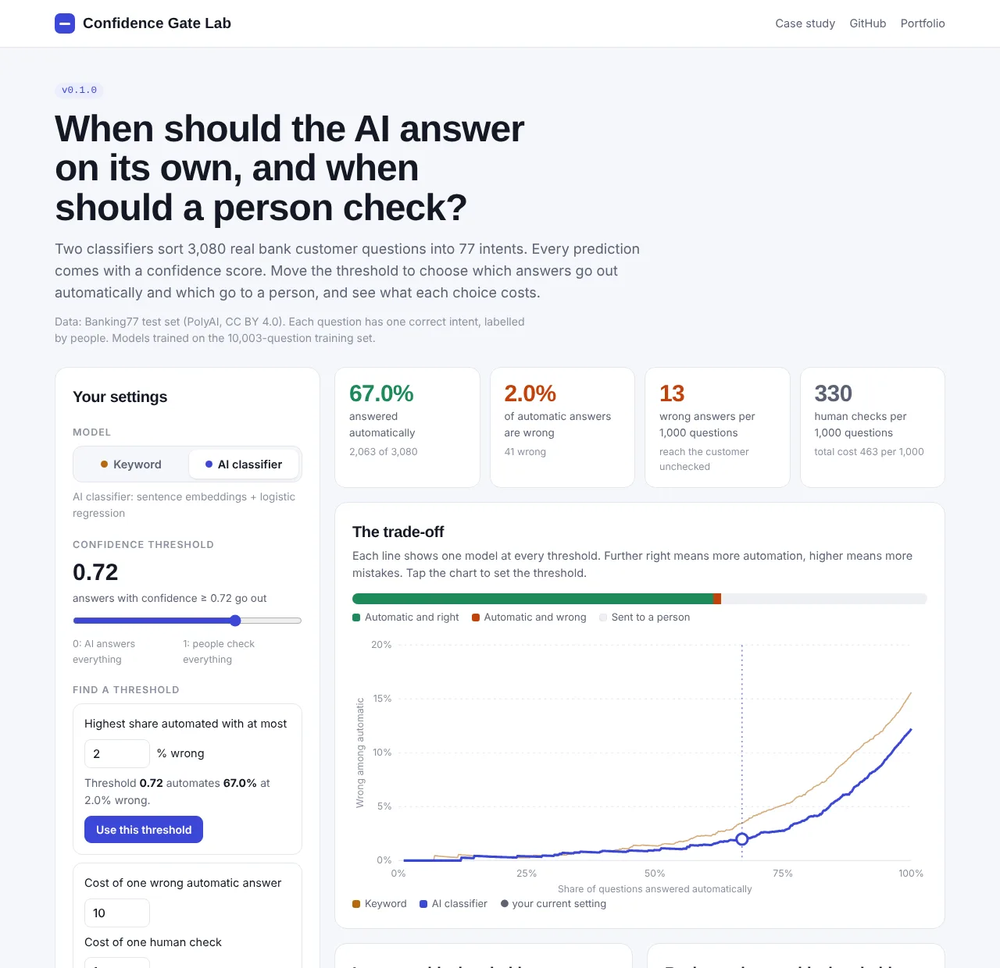

The question
An AI classifier picks an intent for a customer question and gives a confidence score. The product team has to choose the confidence above which the answer goes straight to the customer, and below which a person checks it. I wanted to see how much automation each choice buys, and whether a threshold chosen for one model holds for another.

Approach
- Data: Banking77 by PolyAI, bank customer questions labelled by people with one of 77 intents. 10,003 to train, 3,080 to test.
- Two models trained once, offline: a keyword baseline (naive Bayes on word counts) and an AI classifier (sentence embeddings with logistic regression).
- For every threshold, count the questions answered automatically, how many of those are wrong, and how many go to a person.
- Two ways to pick: the most automation under an error rate you choose, or the lowest total cost for your own cost of a wrong answer and of a human check.
Headline numbers
| Measure | Keyword | AI classifier |
|---|---|---|
| Accuracy if everything is automated | 84.4% | 87.8% |
| Automated with at most 1% wrong | 41.8% | 49.8% |
| Automated with at most 2% wrong | 55.1% | 67.0% |
| Automated with at most 5% wrong | 73.3% | 83.8% |
| Threshold for at most 2% wrong | 0.96 | 0.72 |
Banking77 test set, 3,080 questions, scored 20 Nov 2026.
Findings
The better model buys automation, not just accuracy
The accuracy gap looks small: 84.4% against 87.8%. At a fixed 2% error rate the gap is much larger. The AI classifier answers 67.0% of questions automatically, the keyword model 55.1%. For a team that pays per human check, that difference is the business case.
A threshold does not carry over between models
The keyword model needs 0.96 to stay within 2% wrong. At the AI classifier's 0.72 it would be wrong 6.4% of the time. The keyword model is overconfident (average confidence 0.87, accuracy 0.84), the AI classifier underconfident (0.76 against 0.88). The threshold belongs to a model version and must be checked again with every model change.
One threshold for all intents hides weak spots
At 0.72 the AI classifier answers 25% of "card acceptance" questions automatically and 98% of "lost or stolen phone" questions. The hardest intents are close relatives, such as "top up failed" and "top up reverted".
Some confident mistakes are taxonomy problems
Several of the AI classifier's mistakes with confidence 0.9 or more look like questions that fit two intents, such as "How long does a card delivery take?" labelled "card arrival" and answered as "card delivery estimate". Merging or redefining some intents might help more than a better model.
What I learned as a PM
- Ask "how much can we automate at the error rate we accept?", not "how accurate is the model?".
- The threshold is part of the release. A model update without a new threshold check is a silent change in risk.
- The cost of a wrong answer differs by intent. A wrong answer about fees is not the same as one about a compromised card.
What I would do next
- Choose thresholds on a validation split and report on the test split only.
- Add per intent thresholds and measure the gain.
- Review the confident mistakes by hand to test the taxonomy hypothesis.
- Add a large language model as a third classifier and compare its confidence with how often it is right.
Limits: one public dataset in English, clean single questions, and thresholds found on the same test set they are reported on.